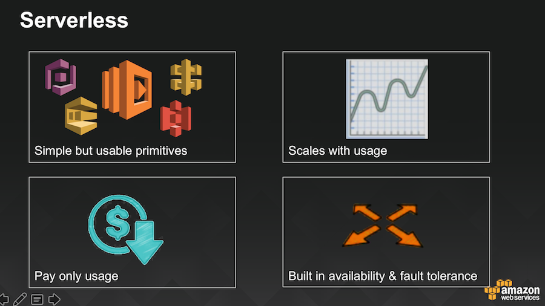
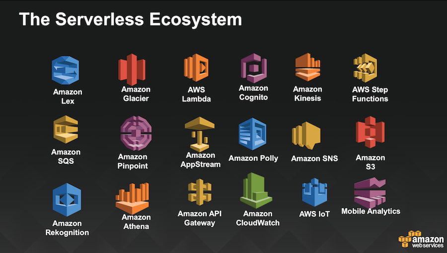

AWS defines Serverless as services with the following features to be serverless:

Serverless is associated with Lambda, but actually there are many AWS Services that are classified as serverless including but not limited to these:

There are many Serverless Use Cases, such as:
Serverless Static Website - Using a combination of Serverless services to build up all components of a static or dynamic website.
Serverless Event Driven Processing - There are many scenarios in this category such as having an event listener (AWS Lambda) on an AWS S3 bucket, which in turn performs another action such as enriching the file and re-writing it to S3, or perhaps writing it to another service. Streaming data though Kinesis can use AWS Lambda as an event listener as well. There are many other uses cases in this category.
Serverless Orchestration - AWS Lambda is often use as the "glue" to orchestrate either the creation or management of AWS Services. Often in combination with other orchestration tools, AWS Step Functions and Lambda can help coordinate, visualise and invoke relevant actions during the launch, management and monitoring of Serverless and other components.
Serverless Application Ecosystem (e.g. AI, Mobile & IoT) - There are many more uses cases in the broader ecosystem, such as with components that utilize various Artificial Intelligence (AI) Services such as Amazon Lex or Amazon Rekognition to provide enhanced capabilities. Similarly, Serverless components play a large role in the Mobile and IoT space.
This Serverless Workshop introduces the basics of serverless applications using AWS Lambda, Amazon API Gateway, AWS Step Functions, Amazon DynamoDB, Amazon Cognito, computational dispatch and machine learning via Amazon EMR (Spark) and other AWS services. We will be building a web application that provides the following features: A Pet Matching Service, A Voice and Text Chatbot using Amazon Lex.
The web application stores static files such as html, images, css and javascript pages in S3. Updates/posts from the application invoke API Gateway. All dynamic content is retrieved via API Gateway and interfaces to the serverless backend.
This lab takes the approach of starting simple and building up, and endeavours to have participants work in
Understand Serverless concepts and feel comfortable using them
Familiarize yourselves with Serverless Development and how to integrate into build pipelines
Obtain enough knowledge and background to be able to participate in AWS Hackathons and Development for real projects
<So let's get started>
 Serverless Static Website - Using a combination of Serverless services to build up all components of a static or dynamic website.
Serverless Static Website - Using a combination of Serverless services to build up all components of a static or dynamic website.
 This lab takes the approach of starting simple and building up, and endeavours to have participants work in
This lab takes the approach of starting simple and building up, and endeavours to have participants work in